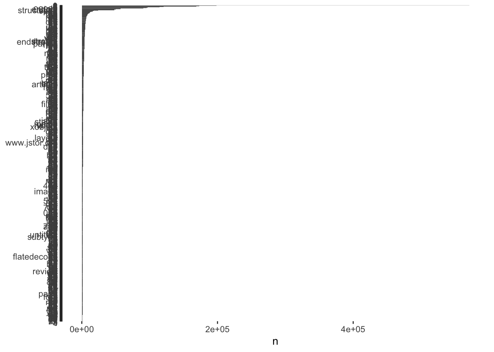
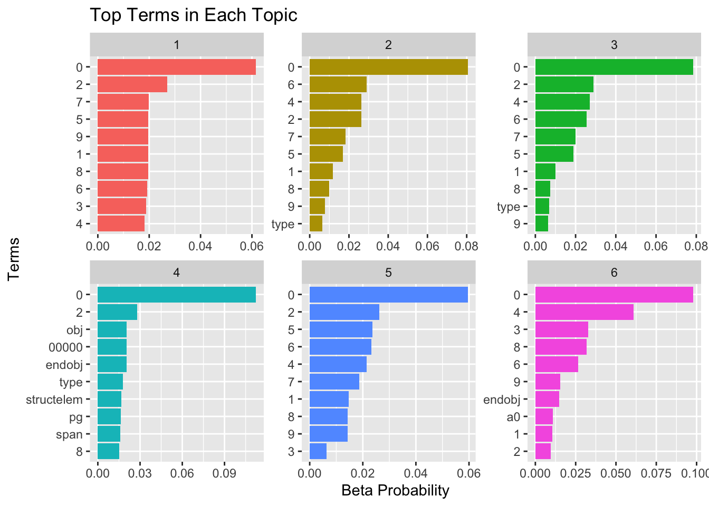
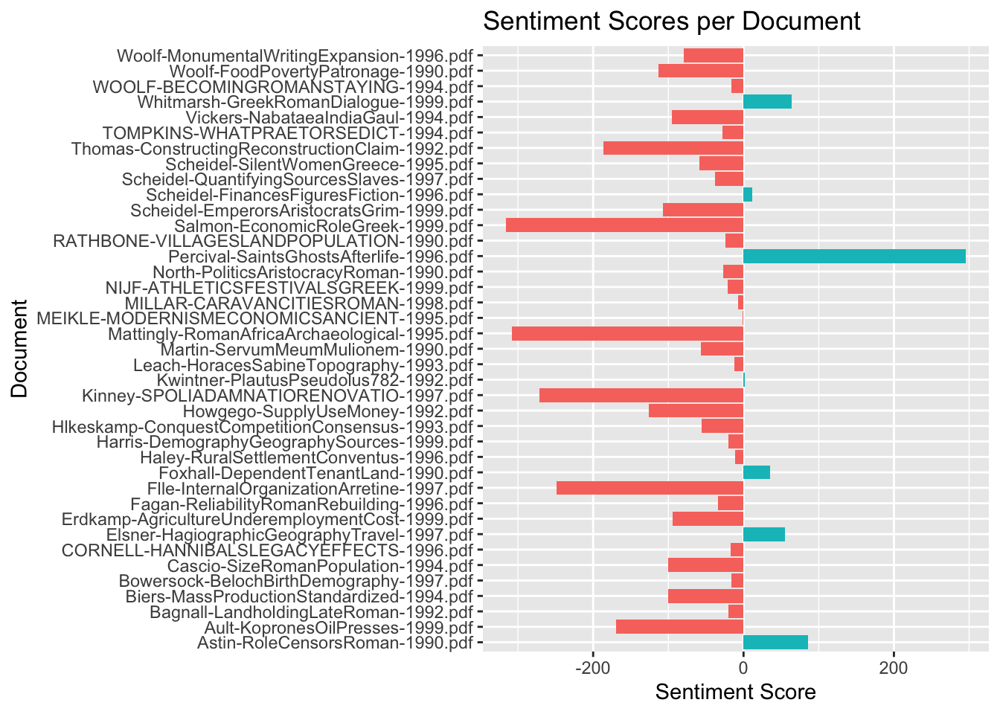
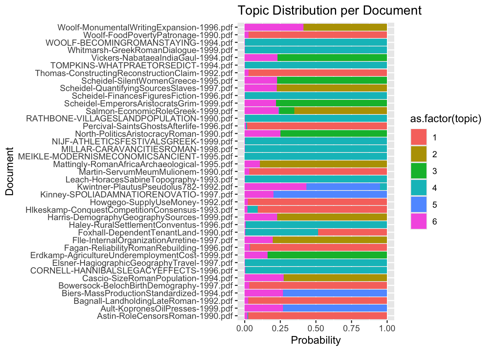

# Load necessary libraries
library(tidyverse)── Attaching core tidyverse packages ──────────────────────── tidyverse 2.0.0 ──
✔ dplyr 1.1.4 ✔ readr 2.1.5
✔ forcats 1.0.0 ✔ stringr 1.5.1
✔ ggplot2 3.5.1 ✔ tibble 3.2.1
✔ lubridate 1.9.4 ✔ tidyr 1.3.1
✔ purrr 1.0.4
── Conflicts ────────────────────────────────────────── tidyverse_conflicts() ──
✖ dplyr::filter() masks stats::filter()
✖ dplyr::lag() masks stats::lag()
ℹ Use the conflicted package (<http://conflicted.r-lib.org/>) to force all conflicts to become errorslibrary(tidytext)
library(topicmodels)
library(textdata)
library(ggplot2)
library(tm)Loading required package: NLP
Attaching package: 'NLP'
The following object is masked from 'package:ggplot2':
annotate# Define the folder containing text files
folder_path <- "/Volumes/VirtMach/GIS/Corpus/Working/1990"
# Read all text files in the folder
files <- list.files(folder_path, full.names = TRUE)
# Function to read and preprocess files
read_text_files <- function(file) {
text <- readLines(file, warn = FALSE)
tibble(file = basename(file), text = text)
}
# Read and combine text files into a single dataframe
documents <- map_dfr(files, read_text_files)
summary(documents) file text
Length:1056700 Length:1056700
Class :character Class :character
Mode :character Mode :character # Unnest tokens: split text into words
tidy_docs <- documents %>%
unnest_tokens(word, text) %>%
anti_join(stop_words) # Remove common stop wordsJoining with `by = join_by(word)`tidy_docs %>%
count(word, sort = TRUE) %>%
filter(n > 1000) %>%
mutate(word = reorder(word, n)) %>%
ggplot(aes(n, word)) +
geom_col() +
labs(y = NULL)
# ---- TF-IDF Analysis ----
tfidf <- tidy_docs %>%
count(file, word) %>%
bind_tf_idf(word, file, n) %>%
arrange(desc(tf_idf))
# Display the top 10 high TF-IDF words
print(tfidf %>% top_n(10, tf_idf))# A tibble: 10 × 6
file word n tf idf tf_idf
<chr> <chr> <int> <dbl> <dbl> <dbl>
1 Haley-RuralSettlementConventus-1996.pdf 000 678 9.10e-3 1.18 0.0107
2 Haley-RuralSettlementConventus-1996.pdf 415.2 126 1.69e-3 3.66 0.00620
3 Haley-RuralSettlementConventus-1996.pdf 629.… 105 1.41e-3 3.66 0.00517
4 Whitmarsh-GreekRomanDialogue-1999.pdf 532.2 114 1.72e-3 2.97 0.00510
5 Elsner-HagiographicGeographyTravel-1997.pdf 532.2 96 1.67e-3 2.97 0.00495
6 Whitmarsh-GreekRomanDialogue-1999.pdf 778.2 95 1.43e-3 2.97 0.00425
7 Elsner-HagiographicGeographyTravel-1997.pdf 778.2 80 1.39e-3 2.97 0.00413
8 Elsner-HagiographicGeographyTravel-1997.pdf link… 79 1.37e-3 2.97 0.00407
9 Whitmarsh-GreekRomanDialogue-1999.pdf link… 86 1.30e-3 2.97 0.00385
10 Leach-HoracesSabineTopography-1993.pdf 5100 64 9.04e-4 2.97 0.00269# ---- Bigram Analysis ----
bigrams <- documents %>%
unnest_tokens(bigram, text, token = "ngrams", n = 2) %>%
separate(bigram, into = c("word1", "word2"), sep = " ") %>%
filter(!word1 %in% stop_words$word, !word2 %in% stop_words$word) %>%
count(word1, word2, sort = TRUE)
# Display top 10 bigrams
print(bigrams %>% head(10))# A tibble: 10 × 3
word1 word2 n
<chr> <chr> <int>
1 <NA> <NA> 174386
2 0 obj 57311
3 type structelem 47709
4 2 0 47328
5 span type 43747
6 0 0 20654
7 4 0 6946
8 0 4 5414
9 0 40 4292
10 4 4 3670# ---- Sentiment Analysis ----
sentiment_lexicon <- get_sentiments("bing") # Use Bing sentiment lexicon
sentiment_scores <- tidy_docs %>%
inner_join(sentiment_lexicon, by = "word") %>%
count(file, sentiment) %>%
spread(sentiment, n, fill = 0) %>%
mutate(sentiment_score = positive - negative)
# Display sentiment scores per document
print(sentiment_scores)# A tibble: 39 × 4
file negative positive sentiment_score
<chr> <dbl> <dbl> <dbl>
1 Astin-RoleCensorsRoman-1990.pdf 71 157 86
2 Ault-KopronesOilPresses-1999.pdf 194 24 -170
3 Bagnall-LandholdingLateRoman-1992.pdf 111 91 -20
4 Biers-MassProductionStandardized-1994.pdf 123 23 -100
5 Bowersock-BelochBirthDemography-1997.pdf 41 25 -16
6 Cascio-SizeRomanPopulation-1994.pdf 223 123 -100
7 CORNELL-HANNIBALSLEGACYEFFECTS-1996.pdf 27 10 -17
8 Elsner-HagiographicGeographyTravel-1997.pdf 29 84 55
9 Erdkamp-AgricultureUnderemploymentCost-199… 157 63 -94
10 Fagan-ReliabilityRomanRebuilding-1996.pdf 51 17 -34
# ℹ 29 more rows# ---- Topic Modeling (LDA) ----
dtm <- tidy_docs %>%
count(file, word) %>%
cast_dtm(file, word, n)
# Fit LDA model with k topics
k <- 6 # Adjust as needed
lda_model <- LDA(dtm, k = k, control = list(seed = 1234))
# Extract topics and terms
topics <- tidy(lda_model, matrix = "beta")
# View top terms for each topic
top_terms <- topics %>%
group_by(topic) %>%
slice_max(beta, n = 10) %>%
ungroup()
# Display top terms
print(top_terms)# A tibble: 60 × 3
topic term beta
<int> <chr> <dbl>
1 1 0 0.0615
2 1 2 0.0271
3 1 7 0.0198
4 1 5 0.0197
5 1 9 0.0197
6 1 1 0.0197
7 1 8 0.0196
8 1 6 0.0192
9 1 3 0.0189
10 1 4 0.0181
# ℹ 50 more rows# ---- Topic Distribution per Document ----
topic_distribution <- tidy(lda_model, matrix = "gamma") %>%
rename(document = document, topic_probability = gamma)
# Display document-topic probabilities
print(topic_distribution)# A tibble: 234 × 3
document topic topic_probability
<chr> <int> <dbl>
1 Astin-RoleCensorsRoman-1990.pdf 1 0.977
2 Ault-KopronesOilPresses-1999.pdf 1 0.000000163
3 Bagnall-LandholdingLateRoman-1992.pdf 1 0.975
4 Biers-MassProductionStandardized-1994.pdf 1 0.000000327
5 Bowersock-BelochBirthDemography-1997.pdf 1 0.967
6 CORNELL-HANNIBALSLEGACYEFFECTS-1996.pdf 1 0.000000812
7 Cascio-SizeRomanPopulation-1994.pdf 1 0.000000172
8 Elsner-HagiographicGeographyTravel-1997.pdf 1 0.000000900
9 Erdkamp-AgricultureUnderemploymentCost-1999.pdf 1 0.000000257
10 Fagan-ReliabilityRomanRebuilding-1996.pdf 1 0.964
# ℹ 224 more rows# ---- Visualization: Top Terms per Topic ----
top_terms %>%
mutate(term = reorder_within(term, beta, topic)) %>%
ggplot(aes(term, beta, fill = as.factor(topic))) +
geom_col(show.legend = FALSE) +
facet_wrap(~ topic, scales = "free") +
coord_flip() +
scale_x_reordered() +
labs(title = "Top Terms in Each Topic",
x = "Terms",
y = "Beta Probability")
# ---- Visualization: Sentiment Scores ----
sentiment_scores %>%
ggplot(aes(x = file, y = sentiment_score, fill = sentiment_score > 0)) +
geom_col(show.legend = FALSE) +
coord_flip() +
labs(title = "Sentiment Scores per Document",
x = "Document",
y = "Sentiment Score")
# ---- Visualization: Topic Distribution ----
topic_distribution %>%
ggplot(aes(x = document, y = topic_probability, fill = as.factor(topic))) +
geom_col(show.legend = TRUE) +
coord_flip() +
labs(title = "Topic Distribution per Document",
x = "Document",
y = "Probability")